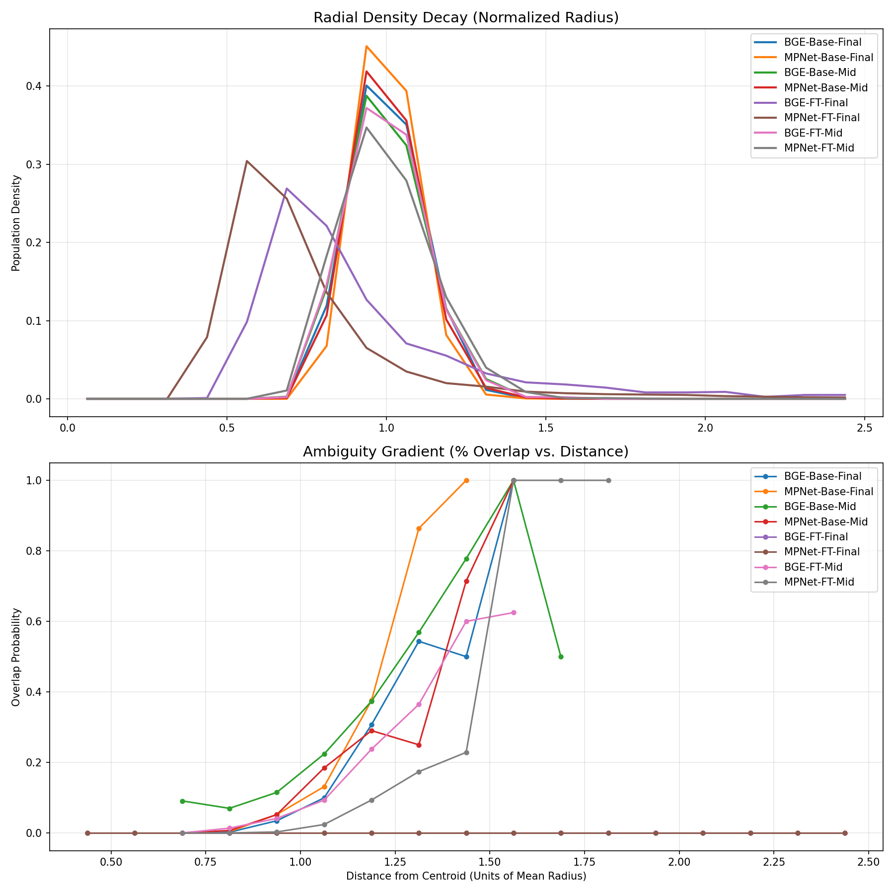
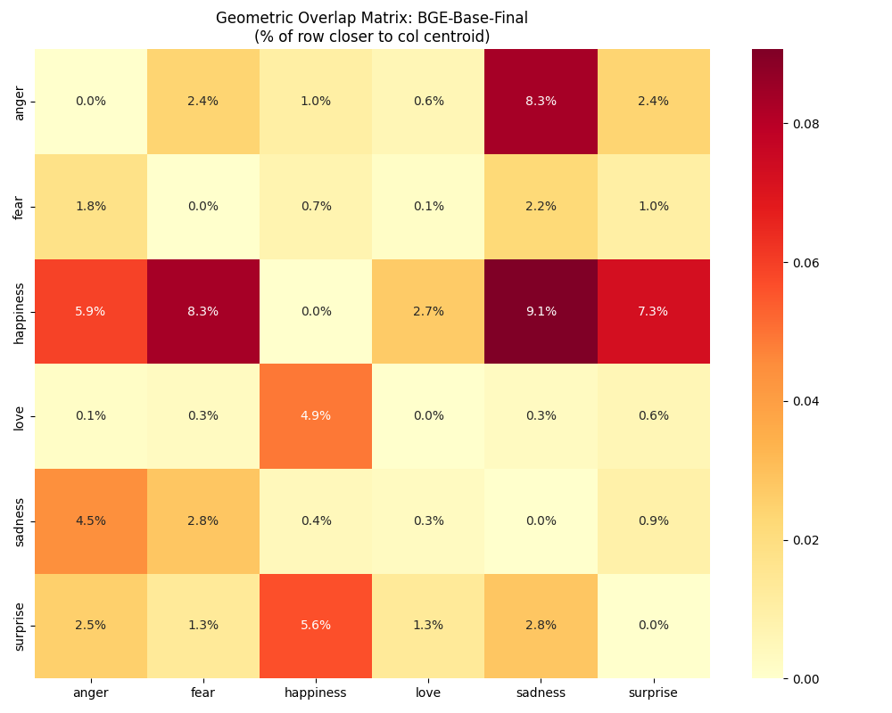
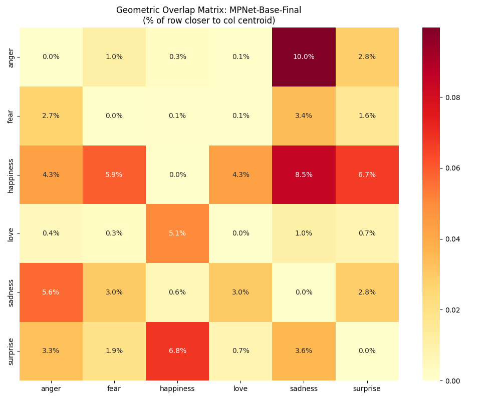
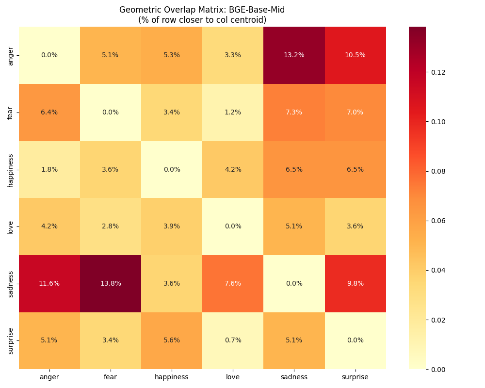
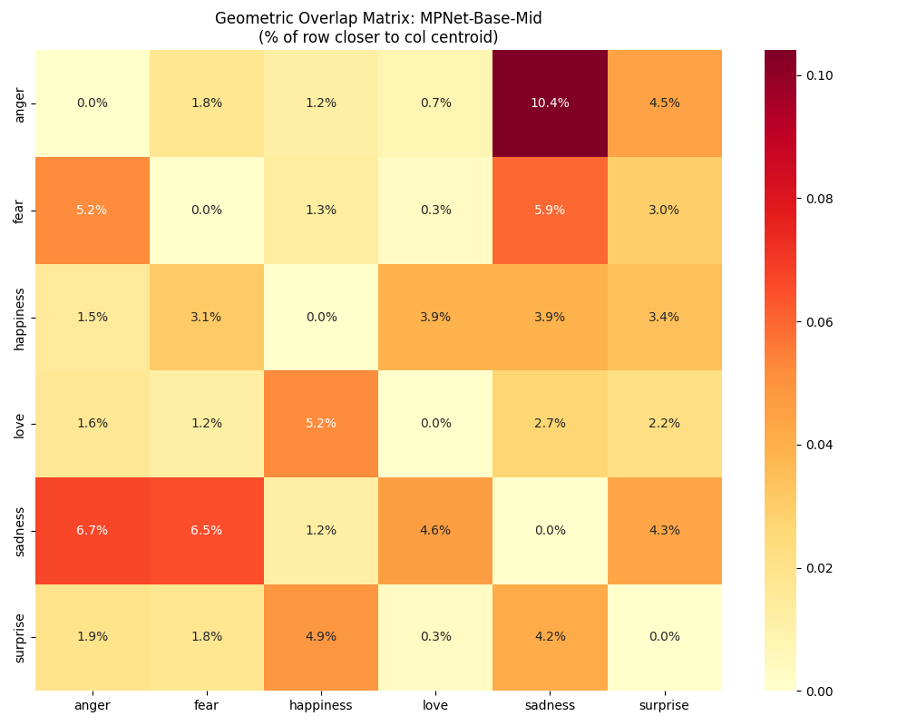
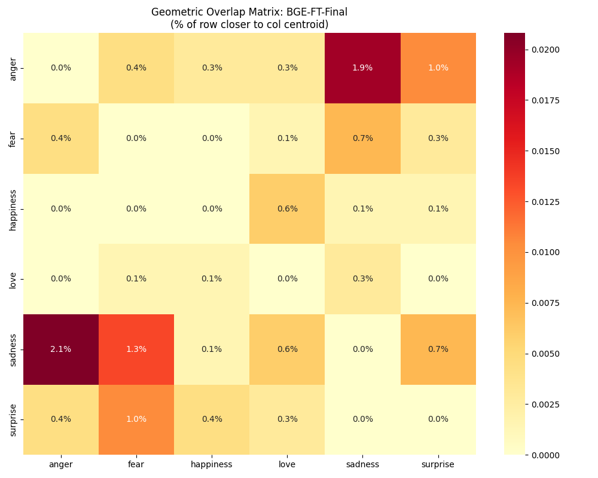
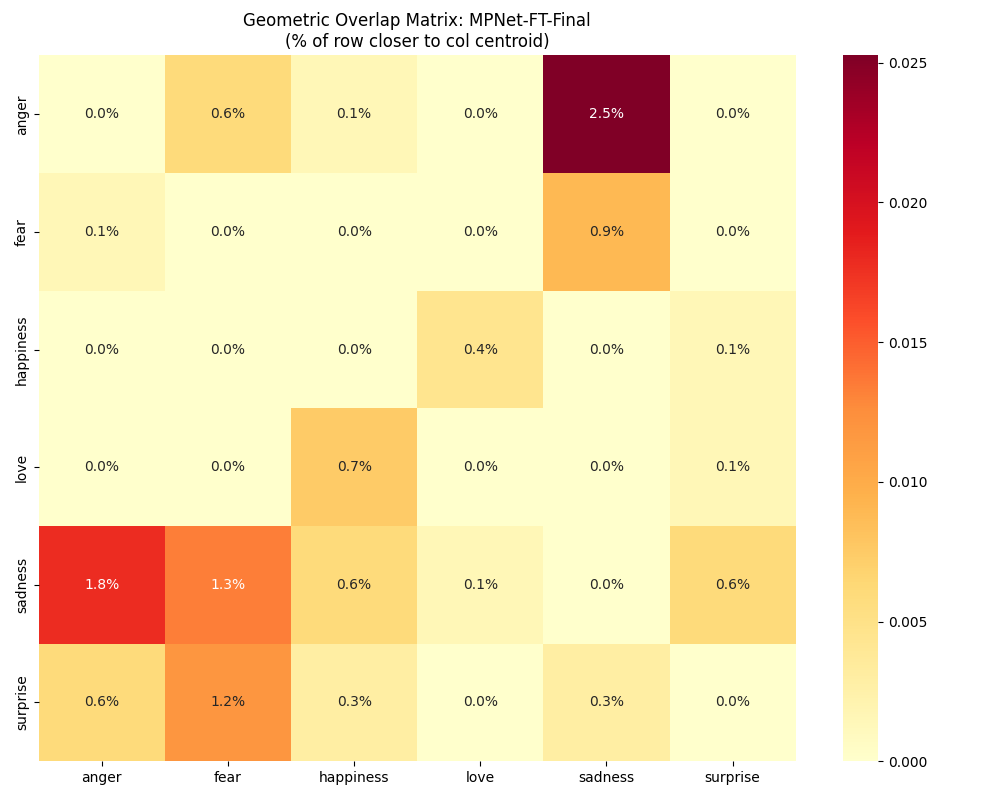
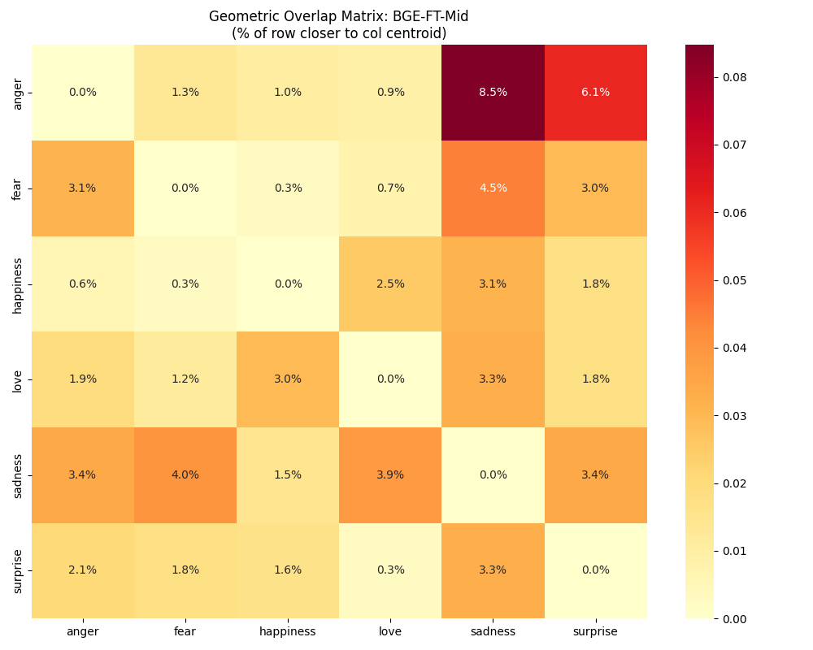
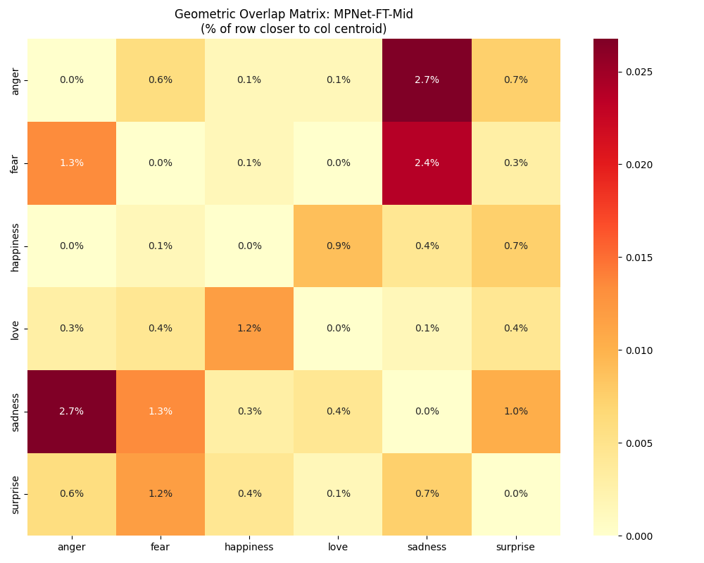

This plot shows the global behavior of all manifolds. Top: Radial population density. Bottom: The probability of geometric overlap as distance increases.

Percentage of samples from class A (row) that are geometrically closer to centroid B (column).








The Certainty Buffer ($$r_{onset} - r_{peak}$$) measures the "safe zone" between the core density and the start of ambiguity.
| Variant | Peak Density ($$r_{peak}$$) | Overlap Onset ($$r_{onset}$$) | Certainty Buffer |
|---|---|---|---|
| MPNet-FT-Final | 0.562 | 2.438 | +1.875 |
| BGE-FT-Final | 0.688 | 2.438 | +1.750 |
| BGE-Base-Final | 0.938 | 1.062 | +0.125 |
| MPNet-Base-Final | 0.938 | 0.938 | +0.000 |